Authors: Mauro E. S. Morales
Type: theory · Category: quantum information and computing · PDF: https://arxiv.org/pdf/2608.05321v1
Analysis basis: full PDF text, analyzed in chunks
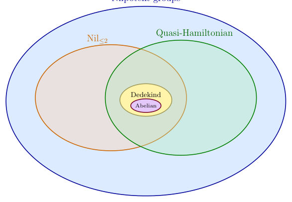
Summary. This paper develops polynomial-time quantum algorithms for solving the Hidden Subgroup Problem (HSP) in specific classes of non-Abelian finite groups, including semidirect products and quasi-Hamiltonian groups. It achieves this by exploiting deep structural properties of these groups and refining quantum measurement techniques like the block measurement protocol. The research advances the theoretical understanding of what computational problems can be efficiently solved on a quantum computer using group structure knowledge.
Why it may be interesting. This work pushes the boundaries of quantum complexity theory by extending known quantum algorithms beyond simple Abelian structures to complex, structured non-Abelian groups relevant in abstract algebra.
Main problem. The paper addresses the Hidden Subgroup Problem (HSP) for non-Abelian finite groups, which is significantly harder than the Abelian case.
Main result. Polynomial-time quantum algorithms are provided for two structured families of non-Abelian groups: semidirect products $A times_{\varphi} \mathbb{Z}_{p^k}$ and quasi-Hamiltonian groups.
Method. The methods involve adapting techniques from Abelian HSP solvers, utilizing structural properties like modular subgroup lattices (for quasi-Hamiltonian groups), and employing advanced quantum measurement protocols like the block measurement technique.
Model / system. The theoretical model is abstract group theory applied to quantum computation; no specific physical Hamiltonian or lattice system is described. The focus is on solving a computational problem defined over finite groups $G$.
Key observables. Success probability of the quantum algorithm, which must be shown to be high enough (e.g., $\geq rac{\phi(N)}{N} 2^{mt} p$) for polynomial time complexity.
Important parameters / regimes. Group structure parameters such as $p$ (prime), $k$, and the exponent of the Abelian factor, $ ext{Exp}(A)$. Efficiency depends on conditions like $ ext{Exp}(A)/p = ext{polylog}(|G|)$.
Assumptions / limitations. The algorithms rely on specific structural assumptions about the groups (e.g., quasi-Hamiltonian structure, or $A$ having bounded generator rank) and assume black-box access to group operations.
Figures summary. Figure 1 schematically illustrates the inclusion relationship between various group classes: Nilpotent $\le 2$, Quasi-Hamiltonian, Dedekind, and Abelian groups.
Paper structure. The paper progresses by first establishing the context of HSP difficulty in non-Abelian settings. It then details algorithms for semidirect products (Theorem A/B), followed by a dedicated treatment for quasi-Hamiltonian groups (Theorem C). The latter sections involve deep analysis of quantum measurement protocols (PGM) and structural comparisons with other group families.
Several early quantum algorithms, including Simon's algorithm and Shor's period-finding are instances of the hidden subgroup problem (HSP) over finite abelian groups. No polynomial-time quantum algorithm is known for the HSP over arbitrary non-abelian finite groups. The non-Abelian case is of particular interest because some instances, such as the dihedral and symmetric group HSPs, are connected to lattice problems and graph isomorphism, respectively. In this work, we give polynomial-time quantum algorithms for two further families containing non-Abelian groups. First, we consider groups of the form $G=A\rtimes_{\varphi} \mathbb{Z}_{p^k}$, with $A$ finite Abelian, $p$ prime, $k\in \mathbb{N}$ and the action of $\mathbb Z_{p^k}$ is generated by the scalar automorphism $a\mapstoμa$, for some $μ\in\mathbb Z_{\operatorname{Exp}(A)}^\times$, where $\mathrm{Exp}(A)$ is the exponent of $A$. Our algorithm is efficient when $A$ has bounded generator rank and $\mathrm{Exp}(A)/p=\mathrm{polylog}(|G|)$. This includes the case $A=\mathbb{Z}_N$ for $N\in\mathbb{N}$ and $k=1$, studied by Bacon, Childs and van Dam (FOCS 2005), and $A=\mathbb{Z}_{q^r}$ with $q$ prime and $r\in \mathbb{N}$ studied by van Dam and Dey (TQC 2014). Second, we give a polynomial-time quantum algorithm for finite quasi-Hamiltonian groups under a mild assumption on the input structure. Quasi-Hamiltonian groups are finite nilpotent groups with modular subgroup lattice, or equivalently the finite groups in which every subgroup is permutable. As far as we know, this is the first quantum algorithm to exploit the modularity of the subgroup lattice for solving the HSP. This extends, under the aforementioned structured input assumption, the quantum algorithm for Dedekind groups given by Hallgren, Russell, and Ta-Shma (SIAM J. Comput. 32, 2003).
Authors: Eric Kubischta, Ian Teixeira
Type: theory · Category: quantum information and computing · PDF: https://arxiv.org/pdf/2608.06304v1
Analysis basis: full PDF text, analyzed in chunks
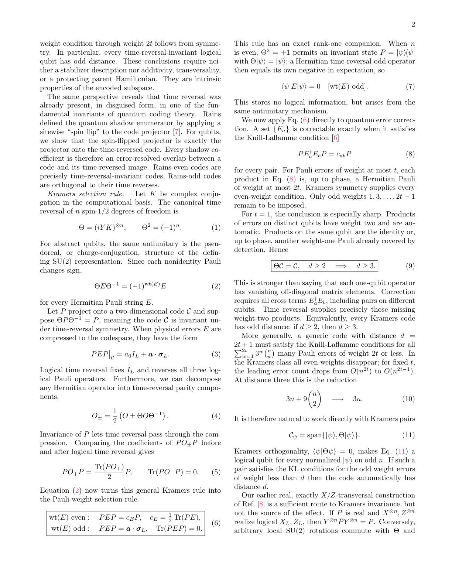
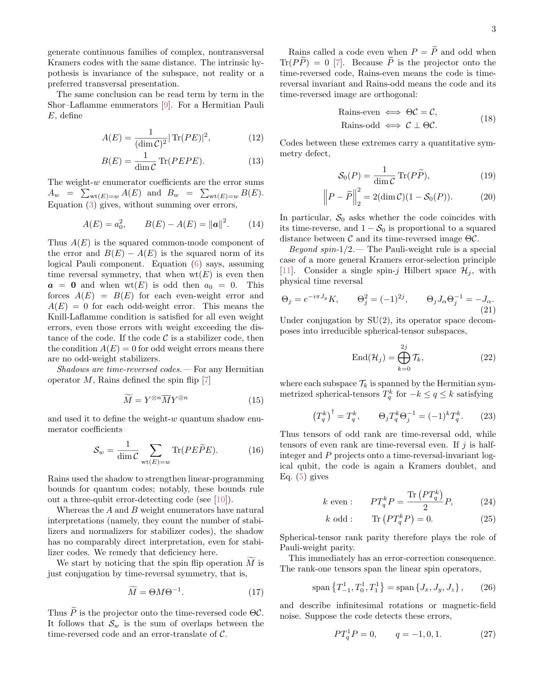
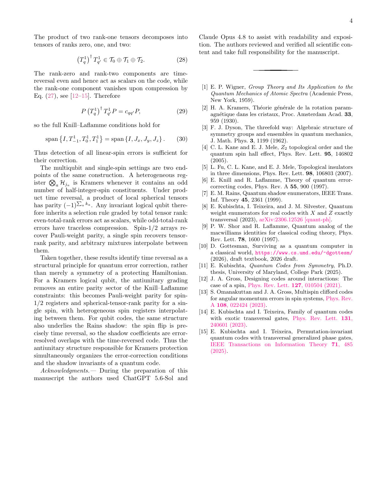
Summary. This work applies time-reversal symmetry to the theory of quantum error correction, showing that this symmetry imposes strong selection rules on the underlying error algebra. These rules automatically satisfy many necessary conditions for fault tolerance, simplifying the requirements for reliable quantum computation. The framework unifies concepts from spectral protection (Kramers pairs) and algebraic constraints (Knill-Laflamme conditions).
Why it may be interesting. It provides a deep structural constraint on quantum codes derived from fundamental symmetries, which is relevant for designing robust quantum memories or computation protocols in physical systems exhibiting time-reversal symmetry.
Main problem. The paper investigates how applying time-reversal symmetry ($\Theta$) imposes structural selection rules on quantum error correction (QEC) codes.
Main result. Time-reversal invariance forces all even-weight Pauli operators to act as scalars, automatically satisfying the even-weight Knill–Laflamme conditions and simplifying error detection requirements.
Method. The authors use the antiunitary time-reversal operator $\Theta$ to derive parity selection rules for Pauli strings and reinterpret Rains' shadow enumerator through this symmetry.
Model / system. The analysis is performed on quantum codes defined over spin-1/2 particles (qubits) and generalizes to multi-spin systems. The focus is on the time-reversal invariance of the code subspace itself.
Key observables. Kramers degeneracy, Pauli weight parity, Knill–Laflamme conditions satisfaction, and coefficients of the Rains shadow enumerator ($S_w$).
Important parameters / regimes. The degree of error correction distance ($d$) and the number of spins ($n$).
Assumptions / limitations. The analysis assumes working with spin-1/2 particles and relies on the antiunitary nature of time reversal ($\Theta$).
Paper structure. The paper establishes the link between spectral protection (Kramers degeneracy) and algebraic error protection by applying $\Theta$ to QEC codes, deriving selection rules, and reinterpreting shadow invariants.
We apply time-reversal symmetry to quantum codes and show that it imposes parity selection rules on the physical error algebra. A time-reversal-invariant logical qubit on an odd number of spins is a Kramers doublet, forcing every even-weight Pauli to act as a scalar. Consequently, all even-weight Knill--Laflamme conditions hold automatically, so single-qubit error detection implies correction. We then reinterpret the Rains shadow enumerator through time reversal: each coefficient is a sum of error-resolved overlaps between a code and its time-reversed image.
Papers from cond-mat.mtrl-sci, mes-hall, other, soft, supr-con. These archives are de-prioritized — they appear at the end regardless of relevance score.
Authors: Tony Liu, Joaquim Telles de Miranda, Daniel Shaffer, Alex Levchenko
Type: theory · Category: statistical mechanics · PDF: https://arxiv.org/pdf/2608.05306v1
Analysis basis: full PDF text, analyzed in chunks
Topic relevance: 🔥 Keldysh / 2PI / non-Gaussian methods 4/5 · correlated / nonlocal dissipation 3/5 · driven-dissipative phase transition 3/5 · methods for driven-dissipative 3/5 · non-equilibrium dynamics 3/5 · non-equilibrium universality 3/5 · spintronics-quantum-optics interface 2/5 · Kondo & dissipative impurity 1/5 · exotic spin models in light-matter 1/5
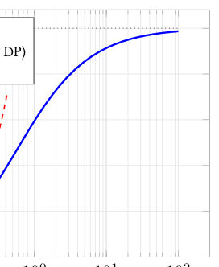
Summary. This work develops a generalized time-dependent Ginzburg-Landau theory for disordered, noncentrosymmetric superconductors using the Keldysh formalism. It determines that nonreciprocal Lifshitz invariants appear in both the free energy and the dynamic fluctuation terms. The results unify conflicting theoretical predictions by introducing a single crossover function controlling the system's response to disorder.
Why it may be interesting. The rigorous application of fluctuation-dissipation theorems and symmetry principles (Onsager reciprocity) to derive non-equilibrium dynamics in a superconducting context provides advanced tools for understanding dissipation beyond simple mean-field treatments.
Main problem. The study derives a generalized time-dependent Ginzburg-Landau theory for disordered noncentrosymmetric superconductors, focusing on the appearance of Lifshitz-type nonreciprocal couplings in the quantum (Keldysh) sector.
Main result. The kinetic Lifshitz invariants are governed by a single crossover kernel dependent on the ratio of the spin-relaxation rate to temperature, reconciling previous conflicting results for magnetoelectric couplings.
Method. The theory is derived from the Keldysh nonlinear sigma model and utilizes principles like the Fluctuation-Dissipation Theorem (FDT) and Onsager reciprocity to determine dynamics.
Model / system. The minimal model is a disordered noncentrosymmetric superconductor realized via a two-dimensional electron gas with Rashba spin-orbit coupling and an in-plane Zeeman field. The analysis uses the Keldysh formalism to construct the effective action.
Key observables. Superconducting diode efficiency, fluctuation-induced magnetochiral anisotropy, relaxation rate of fluctuations ($\mathbf{q}$ dependence), and Langevin noise power (which acquire $\mathbf{q}$-odd and $B$-field odd terms).
Important parameters / regimes. The ratio of the Dyakonov-Perel spin-relaxation rate ($\Gamma_t$) to temperature ($T$), which dictates the crossover between weak-relaxation and relaxation-dominated regimes.
Assumptions / limitations. The analysis is performed in the diffusive regime and relies on gauge covariance arguments within the Keldysh formalism.
Paper structure. The paper establishes the general context of Lifshitz invariants, applies this to superconductors using the Keldysh NLSM, derives the full dynamical theory (TDGL equation), and computes specific nonreciprocal couplings in various limits defined by $\Gamma_t/T$.
We derive the generalized time-dependent Ginzburg-Landau theory of a disordered noncentrosymmetric superconductor from the Keldysh nonlinear sigma model, using a two-dimensional electron gas with Rashba spin-orbit coupling and an in-plane Zeeman field as a minimal model. On the thermodynamic side we construct the Lifshitz invariants of the free energy, the linear and cubic gradient terms and the momentum-odd part of the quartic vertex, and trace their dependence on disorder. These couplings are governed by a single closed-form kernel controlled by the ratio of the Dyakonov-Perel spin-relaxation rate to temperature, interpolating between the weak-relaxation regime, where the invariants are suppressed, and the relaxation-dominated regime, where the helical modulation of the order parameter saturates at a universal, disorder-independent value. This crossover reconciles conflicting results for the magnetoelectric couplings of dirty Rashba superconductors. Because the theory is formulated on the Keldysh contour, it also determines the dissipative dynamics: the relaxation rate of a fluctuation with pair momentum $\mathbf{q}$, and hence, by the fluctuation-dissipation theorem, the Langevin noise power, acquires a term odd in $\mathbf{q}$ and odd in the magnetic field. The structure of this kinetic Lifshitz invariant is dictated by Onsager reciprocity: friction and noise renormalize in lockstep, so equal-time fluctuations remain Gibbsian while the dynamics are nonreciprocal. As applications we compute the superconducting diode efficiency near $T_c$, where the cubic invariant competes with the quartic vertex and with even higher-gradient terms rendered odd by the helical shift, reversing the sign of the diode coefficient, and the fluctuation-induced magnetochiral anisotropy above $T_c$, where the current-resolved nonreciprocal resistance forms a plateau across the Gaussian regime.
Authors: Chaoxi Cui, Yilin Han, Run-Wu Zhang, Zhi-Ming Yu, Yugui Yao
Type: theory · Category: other · PDF: https://arxiv.org/pdf/2608.06217v1
Analysis basis: full PDF text, analyzed in chunks
Topic relevance: 🔥 non-equilibrium universality 4/5 · analog quantum simulation 3/5 · driven-dissipative phase transition 3/5 · non-equilibrium dynamics 3/5 · spintronics-quantum-optics interface 2/5 · Keldysh / 2PI / non-Gaussian methods 1/5 · methods for driven-dissipative 1/5
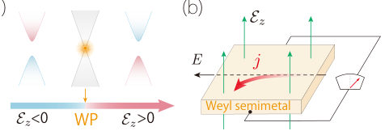
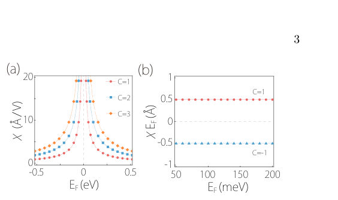
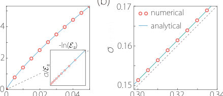
Summary. This work theoretically analyzes the Electric Hall Effect in magnetic Weyl Semimetals, revealing unique scaling behaviors dictated by topology. The key findings include universal $E_F^{-1}$ scaling at zero temperature and a logarithmically corrected scaling at finite temperatures. This suggests a robust, all-electric mechanism for sensing weak electric fields.
Why it may be interesting. While focused on condensed matter topology, the concept of field-induced topological transitions and universal scaling laws are highly relevant in understanding quantum transport phenomena that can be modeled using effective Hamiltonians common in AMO physics (e.g., superconducting qubits or cavity QED systems exhibiting topological phases).
Main problem. The study investigates the unconventional scaling laws governing the Electric Hall Effect (EHE) in 2D magnetic Weyl Semimetals (WSMs). The goal is to understand how topology dictates this response, especially under weak electric fields.
Main result. The EHE exhibits universal scaling at zero temperature ($\chi_{xy} \propto E_F^{-1}$) and an unconventional logarithmically corrected scaling at finite temperature ($\sigma_{xy} \propto E_z \ln(1/|E_z|)$).
Method. Theoretical derivation using the Kubo formula, Berry curvature calculations, and detailed scaling analysis involving momentum-to-parameter space mappings.
Model / system. The system is modeled as 2D magnetic Weyl semimetals hosting doubly degenerate nodal points. The physics is captured by a two-band Hamiltonian subjected to an out-of-plane electric field ($E_z$) which acts as a mass term, inducing topological phase transitions.
Key observables. Electric Hall conductivity ($\sigma_{xy}$) and the intrinsic EHE coefficient ($\chi_{xy}$), both dependent on $E_F$ and $E_z$.
Important parameters / regimes. Fermi energy ($E_F$), out-of-plane electric field strength ($E_z$), and the global topological charge ($C$) of the Weyl points.
Assumptions / limitations. The analysis relies on a two-band model approximation near the nodal points, and specific mathematical mappings between momentum space and parameter space are utilized for integration.
Figures summary. Figures illustrate the $E_z$-driven topological phase transition (gap closing) and compare numerical/analytical results showing the characteristic logarithmic scaling of $\sigma_{xy}(T)$ versus field strength.
Paper structure. The paper systematically derives the EHE coefficient ($\chi_{xy}$) at zero temperature using Berry curvature methods, then extends this analysis to finite temperatures by incorporating thermal effects into the conductivity calculation, revealing the unconventional scaling laws.
Electric Hall Effect (EHE), a unique phenomenon in two-dimensional (2D) magnetic systems, refers to the generation of Hall current by an out-of-plane electric field $\Ez$. Here, we demonstrate that for 2D magnetic Weyl semimetals that host doubly degenerate nodal points, the EHE features multiple unconventional scaling laws. At zero temperature, the EHE exhibits a topological $E_F^{-1}$ Fermi-energy scaling. Remarkably, the prefactor of the scaling is determined by the global topological charge of the point without any dependence on the local parameters of the system, leading to a universal and significant enhancement of Hall response in any species of Weyl points as the Fermi energy approaches the Weyl point. This significant response enables a weak electric field to be directly converted into a measurable Hall signal. Surprisingly, this enhanced Hall response is not diminished by temperature, but evolves into an unconventional logarithmically corrected scaling at finite temperature $σ_{xy}\propto\Ez\ln(1/|\Ez|)$ for weak $\Ez$, still yielding a divergent electric-field susceptibility. Thus, our work not only unveils intriguing scaling laws resulting from the interaction between magnetism and topology, but also suggests a novel scaling-enhanced and temperature-robust mechanism that may enable weak electric-field sensing through a practical and all-electric route.
Authors: David D. J. M. Snee, Yi-Ping Ma
Type: theory · Category: other · PDF: https://arxiv.org/pdf/2608.06342v1
Analysis basis: full PDF text, analyzed in chunks
Topic relevance: 🔥 analog quantum simulation 4/5 · Frenkel-Kontorova 3/5 · non-equilibrium dynamics 2/5 · spintronics-quantum-optics interface 2/5 · correlated / nonlocal dissipation 1/5 · driven-dissipative phase transition 1/5 · exotic spin models in light-matter 1/5 · methods for driven-dissipative 1/5 · non-equilibrium universality 1/5
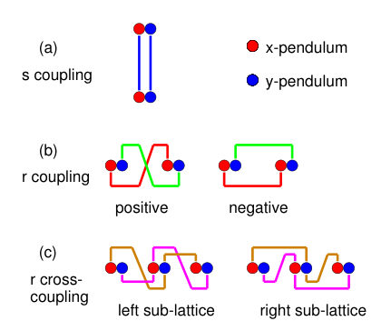
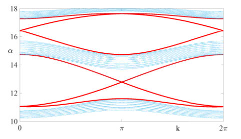
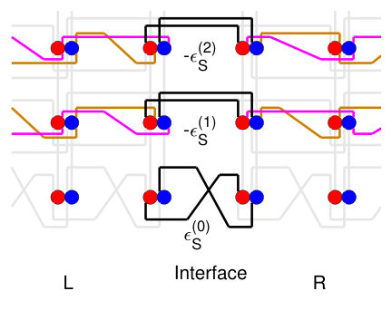
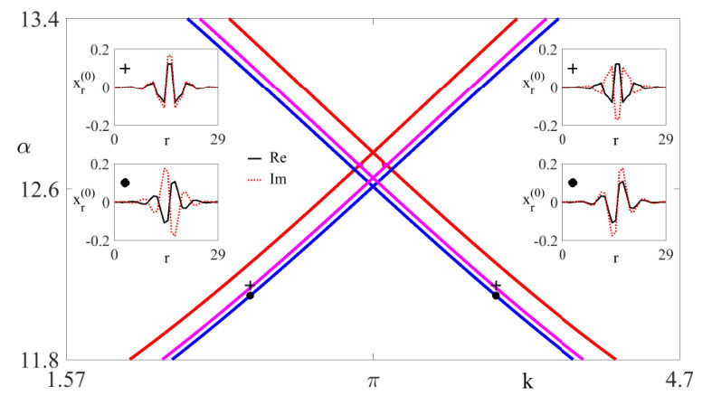
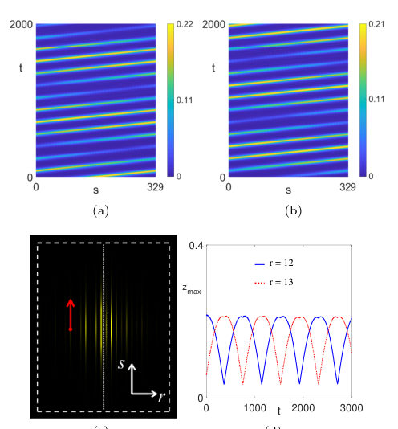
Summary. This paper models nonlinear waves in a 2D mechanical topological insulator using coupled nonlinear Schrödinger equations. It predicts the existence and properties of various vector edge solitons and domain walls, which are topologically protected. The findings suggest that these systems can be engineered for advanced functionalities like collision-based computing.
Why it may be interesting. This work bridges nonlinear wave physics, topological materials, and mechanical systems. The emergence of robust, controllable soliton dynamics in a physical, non-electronic platform like pendulums is highly relevant for developing novel quantum or classical information processing devices.
Main problem. The research investigates nonlinear edge waves and domain walls within a two-dimensional mechanical topological insulator (MTI). The goal is to characterize the complex soliton dynamics arising from this system.
Main result. The study predicts the existence of various vector edge solitons, including bright-bright and dark-dark types, which are topologically protected when carrier frequencies lie within a band gap. These solitons exhibit potential for energy transfer during collisions, suggesting applications in information processing.
Method. The analysis involves deriving a one-dimensional two-component coupled nonlinear Schrödinger (CNLS) equation from the underlying mechanical lattice dynamics. Soliton solutions are found by analyzing this continuum model and exploring continuation techniques.
Model / system. The physical system is a 2D MTI built using pendulums with on-site cubic nonlinearity, connected by linear springs to realize the quantum spin Hall effect. The dynamics are modeled via coupled nonlinear equations of motion that reduce to the CNLS equation for edge modes.
Key observables. Bright-bright (BB) and dark-dark edge solitons, domain walls, energy transfer during soliton collisions, and topological protection confirmed by passing through defects.
Important parameters / regimes. The system depends on parameters defining the cubic nonlinearity ($\sigma$), coupling strengths ($f$), and the quasi-momentum space structure that allows for Equal Group Velocity (EGV) points.
Assumptions / limitations. The analysis relies on deriving a continuum approximation (CNLS equation) from the discrete lattice model, assuming near degeneracy in the linear spectrum to facilitate this reduction.
Figures summary. Not specified by notes; however, the text implies figures illustrate the schematic connections of pendula, the dispersion relation showing EGV points, and visualizations of the resulting solitons/domain walls.
Paper structure. The paper is structured logically: reviewing the MTI design (Section II), deriving and analyzing the CNLS equation solutions (Section III), designing the platform and studying propagation (Sections IV & V), exploring BB solitons via defects and collisions (Sections VI & VII), and concluding with future work (Section VIII).
We report nonlinear edge waves in a 2D mechanical topological insulator. A bulk lattice consists of pendulums with on-site cubic nonlinearity connected by linear springs realizing quantum spin Hall effect. We show that the nonlinear interaction between two edge modes with equal group velocities (EGV) is described by a 1D two-component coupled nonlinear Schrödinger (CNLS) equation. On the interface separating two bulk lattices with opposite spin Chern numbers, we construct linear springs such that the dispersion relation exhibits EGV points with favorable CNLS coefficients. Thus, we realize nonlinear edge waves propagating along the interface, including bright-bright (BB) edge solitons for focusing CNLS coefficients, and dark-dark edge solitons, edge domain walls, and dark-bright edge solitons for defocusing CNLS coefficients. In terms of the site amplitudes, these solutions resemble bright and dark breathers. These solutions should be topologically protected when both carrier frequencies lie within a band gap, which we explicitly show by passing BB edge solitons through compact defects on the interface. We also show energy transfer in BB edge soliton collisions with potential application to collision-based computing. Generally, vector edge solitons exhibit a large parameter space for soliton collisions, which endows mechanical devices with greater potential for information processing and other functionalities.
Authors: Nikolaos K. Efremidis, Demetrios N. Christodoulides
Type: both · Category: other · PDF: https://arxiv.org/pdf/2608.05796v1
Analysis basis: full PDF text, analyzed in chunks
Topic relevance: 🔥 interference shaping light 4/5 · quantum optics experiment 3/5 · analog quantum simulation 1/5 · driven-dissipative phase transition 1/5 · methods for driven-dissipative 1/5 · non-equilibrium dynamics 1/5
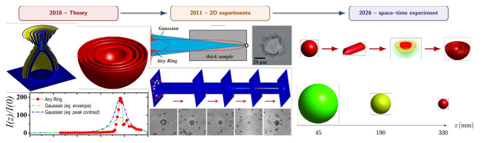
Summary. This paper reports on the generation and characterization of 'abruptly autofocusing waves,' which concentrate optical energy suddenly at a specific point rather than gradually like Gaussian beams. By experimentally realizing spherical Airy wavepackets in the full space-time domain, the authors demonstrate a method for achieving highly localized light delivery. This breakthrough opens new avenues for ultrafast structured light applications in photonics and material science.
Why it may be interesting. This work is highly relevant to quantum optics and open quantum systems as it deals with engineered light fields capable of extreme spatial/temporal confinement. The underlying physics involves nonlinear wave propagation and structured light control, which has parallels in cavity QED or advanced photonic implementations.
Main problem. The research focuses on understanding and utilizing 'abruptly autofocusing waves' due to their ability to deliver optical energy with high precision at a prescribed focus, contrasting them with conventional Gaussian focusing.
Main result. The authors successfully demonstrated the experimental realization of spherical Airy wavepackets in the full space-time domain, achieving a tightly focused beam with significantly higher contrast than an equivalent Gaussian beam.
Method. The experiment involved generating a 2D space-time Airy precursor using a spatiotemporal hologram and extending this field into spherical geometry via log-polar optical transformation combined with spectral phase control.
Model / system. The system involves light propagation governed by the wave equation, specifically utilizing Airy profiles in both two-dimensional (circular) and full three-dimensional space-time geometries. These waves are compared against standard Gaussian focusing profiles.
Key observables. High-contrast intensity surge at a prescribed focus; comparison of peak intensity to Gaussian beams; ability to achieve tight energy localization.
Important parameters / regimes. The geometry (2D vs 3D space-time); the contrast ratio relative to Gaussian beams; spectral bandwidth and aperture limitations.
Assumptions / limitations. Current experimental implementations are limited by pixelated spatial light modulators, finite apertures, and approximations introduced by log-polar mapping requiring careful compensation.
Figures summary. Figure 1 illustrates the historical progression of these waves: from theoretical prediction (2010) to circular wave observation (2011), culminating in the recent experimental realization of the full space-time spherical counterpart [13].
Paper structure. The paper appears structured around establishing the physical phenomenon, reviewing the evolution of its study (from 2D to 3D), detailing the complex experimental methodology required for 3D generation, and concluding with applications and future directions.
Whereas conventional Gaussian focusing gradually concentrates optical energy around the focal plane, abruptly autofocusing waves maintain a low peak intensity over most of their evolution before undergoing a sudden, high-contrast intensity surge at a prescribed focus. Since their introduction in 2010, their two-dimensional spatial realizations have enabled applications ranging from particle manipulation and material processing to terahertz generation and nonlinear optics. The recent work of Cao et al. marks the transition from (2+1)-dimensional spatial autofocusing to the full space-time domain through the experimental synthesis of spherical Airy wavepackets. This advance opens new opportunities for ultrafast structured light, tightly localized energy delivery, and nonlinear photonics.
Authors: Christopher J. Butler, Katsuki Nihongi, Haruto Yoshimochi, Nguyen Duy Khanh, Rina Takagi, Tetsuo Hanaguri, Shinichiro Seki
Type: both · Category: strongly correlated electrons · PDF: https://arxiv.org/pdf/2608.05528v1
Analysis basis: full PDF text, analyzed in chunks
Topic relevance: exotic spin models in light-matter 3/5 · spintronics-quantum-optics interface 3/5 · analog quantum simulation 2/5 · driven-dissipative phase transition 2/5 · Keldysh / 2PI / non-Gaussian methods 1/5 · Kondo & dissipative impurity 1/5 · entanglement & information structure 1/5 · methods for driven-dissipative 1/5 · non-equilibrium dynamics 1/5 · non-equilibrium universality 1/5
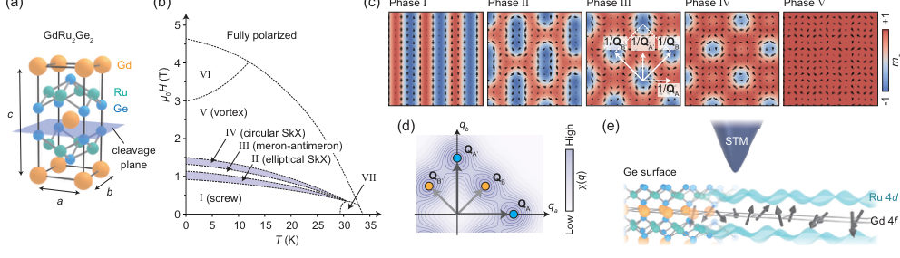
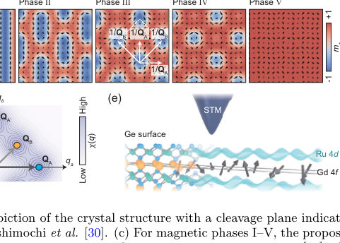
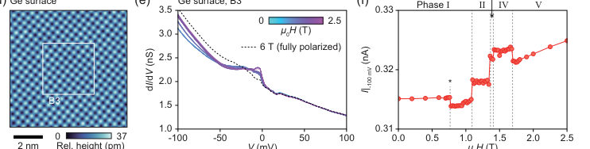
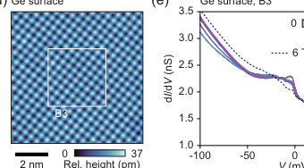
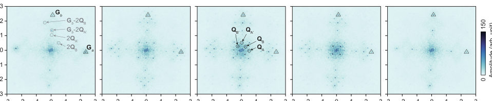
Summary. This work uses STM to probe the electronic structure of a skyrmion magnet across multiple magnetic phases. It establishes that the observed charge modulations (LDOS) are not arbitrary but are microscopically dictated by the local alignment of neighboring spins. This provides crucial evidence for the intimate, intertwined relationship between spin and orbital degrees-of-freedom in itinerant magnets.
Why it may be interesting. While focused on magnetism, the detailed mapping of charge (LDOS) modulation driven by magnetic order touches upon concepts relevant to emergent quantum phenomena in correlated electron systems, which share mathematical frameworks with many-body physics studied in AMO or strongly correlated contexts.
Main problem. The study aims to elucidate the microscopic mechanisms stabilizing non-collinear magnetism and establish the direct relationship between multi-$Q$ charge modulations (LDOS) and spin textures in itinerant skyrmion magnets.
Main result. The analysis demonstrates a tight correlation where the alignment of nearest-neighbor Gd spins dictates the local density-of-states (LDOS) patterns observed in the Ru 4d orbitals, providing a microscopic view of charge-spin intertwining.
Method. The research combines Scanning Tunneling Microscopy (STM) measurements to map LDOS modulations with theoretical modeling that relates these electronic textures to underlying spin structures via bond-centered dot products.
Model / system. The system is the compound GdRu2Ge2, which exhibits multiple magnetic phases including skyrmion crystal states. The physics involves itinerant electrons mediating interactions between localized Gd 4f spins and delocalized Ru 4d orbitals.
Key observables. Periodic LDOS patterns observed via STM (analyzed by FFT), wavevectors ($Q_A, Q_B$), scalar chirality ($ ext{nsc}(\mathbf{r})$), and the topological index ($N_{sk}$).
Important parameters / regimes. Temperature/Magnetic Field sweeps across five magnetic phases; energy bias voltage range for LDOS mapping.
Assumptions / limitations. The primary assumption is that the electronic modulations (LDOS) are directly governed by local spin-spin interactions ($\langle \mathbf{S}_{i,j} \cdot \mathbf{S}_{i+1,j} angle$) via a Non-Collinear Magneto-Resistance effect.
Figures summary. Figures show STM images and their Fourier transforms confirming superstructures related to magnetic wavevectors in different phases; energy dependence plots detail how the LDOS pattern changes with bias voltage, revealing phase inversions.
Paper structure. The paper progresses by first characterizing multiple magnetic phases using STM/FFT analysis (identifying multi-$Q$ patterns), then developing a theoretical model linking these patterns to spin-spin dot products ($\mathbf{W}(\mathbf{r})$), and finally confirming the correlation between local spin alignment and measured electronic modulations.
The mechanisms stabilizing non-collinear magnetism in centrosymmetric crystals remain unclear, but likely involve spin-spin interactions mediated by itinerant electrons, such as the RKKY interaction. Finite-$Q$ magnetic order may then be accompanied by electronic modulations that are observable using a scanning tunneling microscope. In five successive magnetic phases of GdRu$_{2}$Ge$_{2}$, including two nano-scale skyrmion crystal phases, we show that multi-$Q$ magnetism among Gd 4$f$ spins entails a corresponding multi-$Q$ texture among the Ru 4$d$ orbitals that contribute itinerant electron bands. With atomically-resolved images of each electronic texture's motif, and a simple numerical modeling scheme drawing on the underlying spin structures, we infer their key relationship: The alignment between nearest-neighbor Gd spins tightly correlates with the local density-of-states of the Ru 4$d$ orbitals on the two bond-centered sublattices of the Gd square net. These analyses offer a microscopic view of the atomic-scale intertwining of charge and spin degrees-of-freedom in non-collinear itinerant magnets.
Authors: Yazeed Tawalbeh, Mauro Fernandes Pereira
Type: theory · Category: statistical mechanics · PDF: https://arxiv.org/pdf/2608.06220v1
Analysis basis: full PDF text, analyzed in chunks
Topic relevance: Keldysh / 2PI / non-Gaussian methods 3/5 · spintronics-quantum-optics interface 3/5 · driven-dissipative phase transition 2/5 · methods for driven-dissipative 2/5 · analog quantum simulation 1/5 · correlated / nonlocal dissipation 1/5 · exotic spin models in light-matter 1/5 · non-equilibrium dynamics 1/5 · non-equilibrium universality 1/5
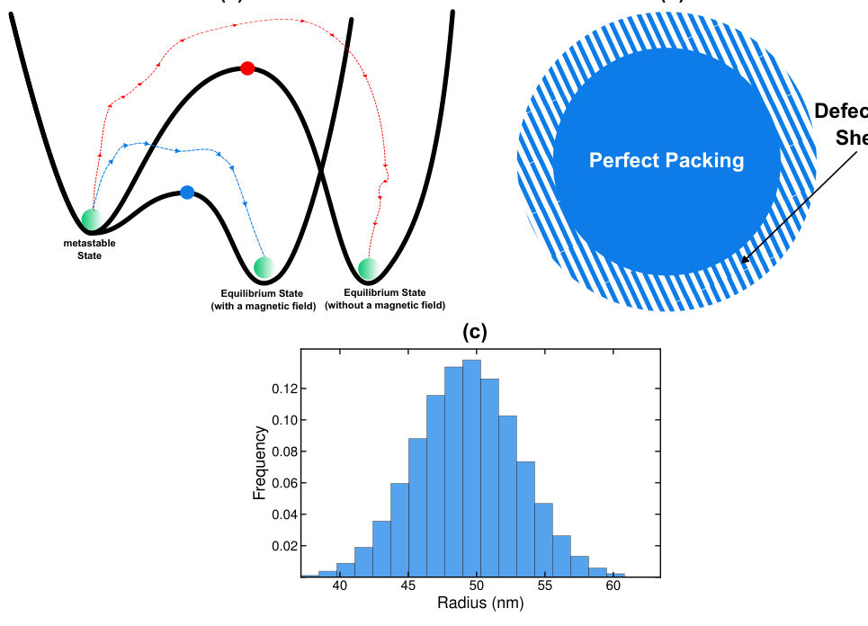
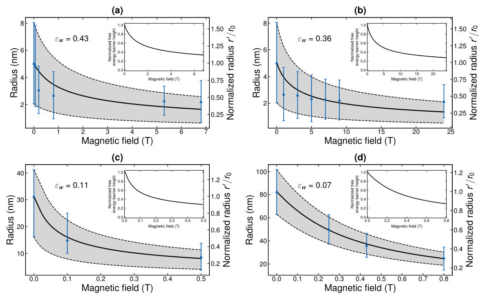
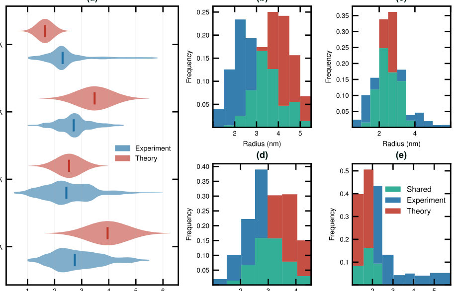
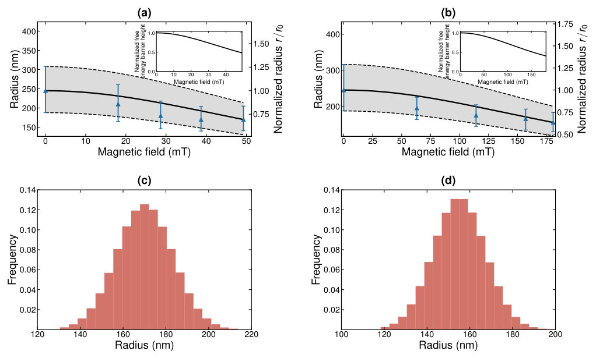
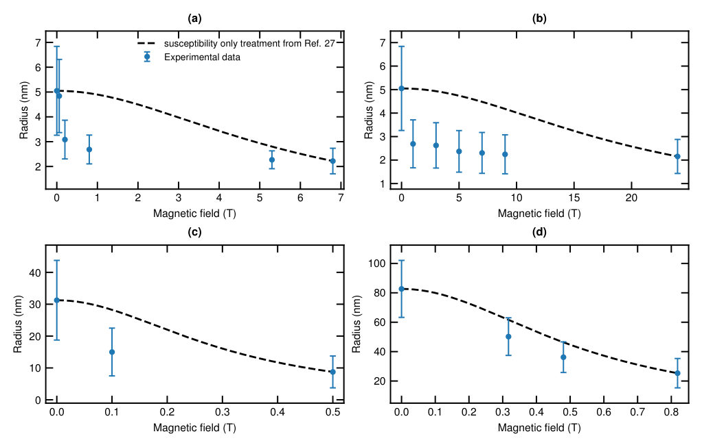
Summary. This paper develops a geometrically closed thermodynamic theory to model how external magnetic fields control nanoparticle size during synthesis. By reformulating classical nucleation theory using a sphere-packing approach, the authors create a unified formalism applicable across different magnetic material types. The resulting framework accurately predicts both the reduction of mean particle size and the narrowing of size distributions with increasing field strength.
Why it may be interesting. While focused on classical nucleation, the rigorous thermodynamic formulation and the development of an analytical framework to handle complex field dependencies provide valuable methodological tools applicable to non-equilibrium phase transitions in quantum systems.
Main problem. The central challenge is developing a unified, computationally efficient theory to control nanoparticle size during synthesis using external magnetic fields.
Main result. The authors establish a geometrically closed thermodynamic framework that successfully unifies the description of nucleation across superparamagnetic, paramagnetic, and diamagnetic systems.
Method. They reformulate classical nucleation theory by introducing a sphere-packing representation to link discrete atomic structure to continuum free-energy contributions, yielding a field-driven evolution equation for the critical nucleus size.
Model / system. The model describes nanoparticle formation where the total free energy ($\Delta F$) is decomposed into surface, bulk driving, induced magnetization, and permanent moment terms. The system spans various magnetic classes (superparamagnetic to diamagnetic).
Key observables. Mean particle size ($r$) and the narrowing of the size distribution as a function of applied magnetic field ($B$).
Important parameters / regimes. Magnetic susceptibility ($\chi_m$), chemical potential difference ($\Delta\mu$), surface free energy ($\gamma$), and the applied magnetic field strength ($B$).
Assumptions / limitations. The theory assumes a specific structure (core + defective shell) for calculating atomic counts, and it treats the permanent moment by assigning it to one effective collective NP moment.
Figures summary. Figures illustrate how an applied magnetic field lowers the free-energy barrier for nucleation and show model-generated size distributions confirming predicted size reduction with increasing field.
Paper structure. The paper introduces the geometrically closed thermodynamic framework, derives the field-driven evolution equation for the critical nucleus size, solves this equation for different magnetic limits (including a susceptibility-only limit), and validates the results by comparing predictions against experimental data for various magnetic materials.
Controlling nanoparticle size during synthesis remains a central challenge in nanoscience, particularly in systems where external magnetic fields are used as continuous control parameters. Existing descriptions of magnetic-field-assisted nucleation are typically material-specific or rely on computationally intensive atomistic methods. Here, we reformulate classical nucleation theory as a geometrically closed thermodynamic framework by introducing a sphere-packing representation of atomic assembly. This construction establishes a direct link between discrete atomic structure and continuum free-energy contributions under applied magnetic fields, yielding a field-driven evolution equation for the critical nucleus size. The resulting theory provides a unified description of nanoparticle nucleation across superparamagnetic, paramagnetic, and diamagnetic systems within a single formalism. It quantitatively reproduces previously unresolved experimental observations for magnetite and nickel nanoparticles, namely the systematic reduction of mean particle size and narrowing of size distributions with increasing magnetic field. In the diamagnetic limit, the framework recovers our earlier analytical susceptibility-based description of silver nanoparticles, in which the field-dependent critical radius is governed by the induced-magnetization contribution to the nucleation free energy. Beyond modeling the reduction of mean particle size with increasing magnetic field, the framework reveals that the narrowing of size distributions emerges naturally from the curvature of the field-modified free-energy landscape. These results establish magnetic-field-assisted nucleation as a geometrically constrained thermodynamic process, providing a computationally efficient route for controlling nanoparticle size across distinct magnetic material classes.
Authors: Bahruz Suleymanli, B. Tanatar
Type: theory · Category: strongly correlated electrons · PDF: https://arxiv.org/pdf/2608.05622v1
Analysis basis: full PDF text, analyzed in chunks
Topic relevance: Keldysh / 2PI / non-Gaussian methods 3/5 · spintronics-quantum-optics interface 3/5 · Kondo & dissipative impurity 1/5 · methods for driven-dissipative 1/5
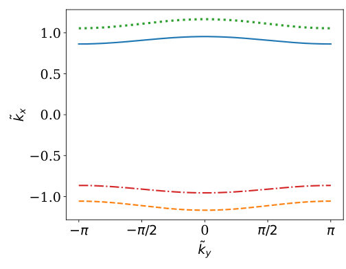
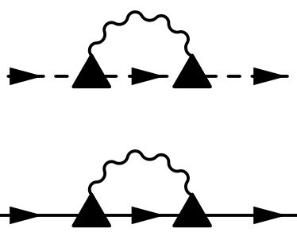
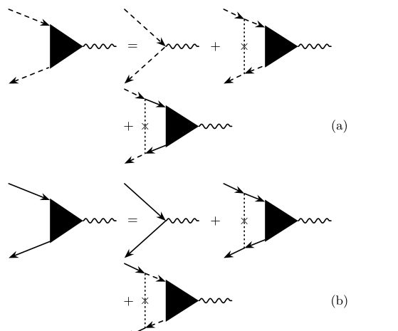
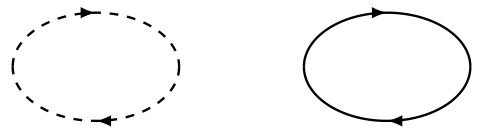
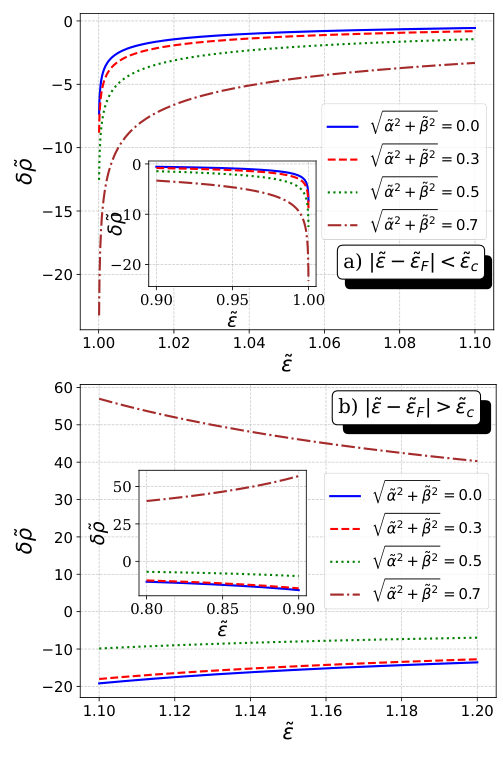
Summary. This theoretical work calculates how electron-electron interactions modify the density of states in highly anisotropic 2D conductors subjected to spin-orbit coupling. The key finding is that SOC dramatically alters the energy dependence of this correlation correction, leading to a sign reversal at critical strengths. This provides a distinct spectroscopic tool for characterizing SOC effects beyond standard Altshuler-Aronov physics.
Why it may be interesting. While focused on electron correlation, the strong anisotropy, low dimensionality, and explicit inclusion of SOC make it relevant to understanding quantum transport in mesoscopic systems where spin-orbit coupling dictates orbital/spin texture effects.
Main problem. The study investigates Altshuler-Aronov type interaction corrections to the single-particle Density of States (DOS) in a strongly anisotropic 2D conductor.
Main result. The DOS anomaly exhibits distinct dimensional crossovers (2D log dip vs. quasi-1D $\sqrt{\cdot}$ singularity), and SOC can induce a sign reversal of this correction, providing a unique spectroscopic signature.
Method. Calculations are performed in Matsubara space using diagrammatic techniques to compute the exchange contribution in the diffusion channel, incorporating dynamically screened Coulomb interactions.
Model / system. The system is a strongly anisotropic 2D electron gas with an open Fermi surface and weak disorder. It includes coexisting Rashba and Dresselhaus spin-orbit couplings (SOCs) constrained to the longitudinal direction.
Key observables. The DOS anomaly ($\delta ho(\epsilon, T)$), which shows logarithmic dips near $\epsilon_F$ and square-root singularities further away.
Important parameters / regimes. Transverse coupling scale ($\varepsilon_c$), SOC strength, disorder scattering rates, and the energy relative to the Fermi level ($|\epsilon - \epsilon_F|$).
Assumptions / limitations. The analysis assumes a weak-disorder diffusive regime ($k_F l \gg 1$) and utilizes approximations like the Random Phase Approximation (RPA) for screening.
Figures summary. Figure 1 illustrates the four warped lines forming the Fermi surface. Figure 7 shows the SOC dependence of the DOS anomaly, and Figure 9 details the complex frequency integration contours used in the calculation.
Paper structure. The paper builds by first defining the physical model (anisotropic conductors with SOC), then detailing the theoretical framework using Matsubara sums and diagrammatic techniques to calculate the self-energy corrections, culminating in an analysis of the resulting DOS anomaly's energy dependence and critical behavior.
We study Altshuler-Aronov-type interaction corrections to the single-particle density of states (DOS) in a strongly anisotropic 2D conductor with an open Fermi surface (FS) and weak disorder, in the presence of coexisting Rashba and Dresselhaus spin-orbit couplings (SOCs) constrained to the longitudinal direction. The low-energy band consists of two warped sheets weakly tunnel-coupled transversely; SOC splits the sheets into helicity branches with a fixed spin axis. Working in a Matsubara space, we compute the exchange contribution in the diffusion channel with dynamically screened Coulomb interaction and an impurity ladder. The resulting DOS anomaly exhibits a dimensional crossover governed by the transverse coupling scale $\varepsilon_c$. Close to the Fermi level ($|\varepsilon-\varepsilon_F|<\varepsilon_c$), the system behaves two-dimensionally, featuring a logarithmic DOS dip whose magnitude is enhanced by intrinsic SOCs. Further from the Fermi level ($|\varepsilon-\varepsilon_F|\!>\!\varepsilon_c$), the system behaves quasi-one-dimensionally, featuring a sharper square-root singularity whose amplitude is remarkably enhanced by the SOCs. Notably, we identify a critical SOC strength at which these spin-orbit effects exactly cancel the electron-correlation correction, perfectly restoring the unperturbed density of states. Furthermore, increasing the SOC beyond this critical point inverts the sign of the anomaly entirely, yielding a positive DOS correction. This sign reversal fundamentally alters the energy dependence, such that at energies beyond $\varepsilon_F + \varepsilon_c$, the positive correction decays to smaller values as energy increases, opposite to the standard negative correction. This contrasting trend provides a distinct spectroscopic signature of SOC-modulated correlation effects.
Authors: Shengshan Qin, Chi Wu, Lun-hui Hu, Tiantian Zhang, Jiangping Hu
Type: theory · Category: other · PDF: https://arxiv.org/pdf/2608.05632v1
Analysis basis: full PDF text, analyzed in chunks
Topic relevance: analog quantum simulation 2/5 · driven-dissipative phase transition 2/5 · Keldysh / 2PI / non-Gaussian methods 1/5 · Kondo & dissipative impurity 1/5 · methods for driven-dissipative 1/5 · non-equilibrium dynamics 1/5
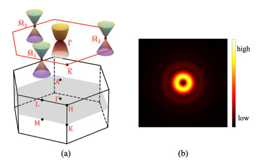
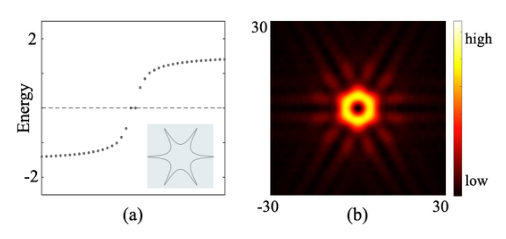
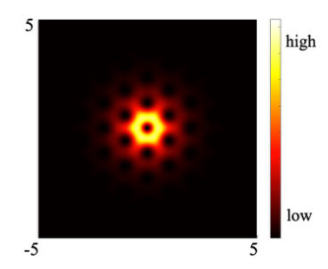
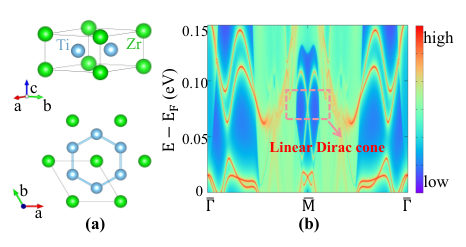
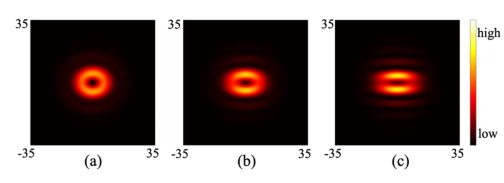
Summary. This work theoretically predicts the existence of an annular Majorana mode within superconducting vortices hosted on topological insulators. The stability of this unique, ring-shaped zero-energy state is linked to specific crystalline symmetries and a total surface state winding number of three. It provides concrete predictions for candidate materials like $\text{ZrTi}_2$ where such exotic topological superconductivity can be realized.
Why it may be interesting. The prediction of a robust, geometrically defined zero-energy state (the ring shape) offers a clear, measurable signature that could be sought in advanced STM experiments on superconducting topological materials, connecting topology to observable quantum phenomena.
Main problem. The paper predicts a novel, stable Majorana zero-energy mode characterized by a ring shape (annular) within superconducting vortices in topological insulators.
Main result. This annular Majorana mode is stabilized by the rotational symmetry and winding number 3 of the surface states, existing either from a nonlinear Dirac cone at $\bar{\Gamma}$ or three linear cones at $\bar{M}$.
Method. The analysis involves solving the Bogoliubov-de Gennes (BdG) Hamiltonian for superconducting vortices and performing symmetry analysis on the resulting bound states.
Model / system. The system is a topological insulator surface state made superconducting, specifically requiring 3-fold or 6-fold rotational symmetry. The model considers two cases: a single nonlinear Dirac cone at $\bar{\Gamma}$ or three linear Dirac cones at $\bar{M}$.
Key observables. The primary observable is the real-space wave function profile, which is predicted to be ring-shaped (annular), contrasting with exponentially decaying modes.
Important parameters / regimes. Rotational symmetry ($3$-fold or $6$-fold); winding number of 3; superconducting gap $\Delta$; and momentum scattering terms ($ ilde{A}, ilde{B}$).
Assumptions / limitations. The initial analysis assumes the adiabatically reachable condition where a specific coupling term ($ ilde{B}$) is zero, although stability is shown even when finite.
Figures summary. Figures illustrate the two physical conditions supporting the annular MZM and show the resulting ring-like wave function profile in real space for the nonlinear Dirac cone case.
Paper structure. The paper first establishes the theoretical framework by identifying the necessary symmetry conditions (winding number 3) leading to the annular mode. It then analyzes the two distinct physical scenarios ($\bar{\Gamma}$ vs $\bar{M}$) using effective Hamiltonians and concludes with predictions for candidate materials.
When the surface states of a topological insulator becomes superconducting, topological superconductivity can be obtained, and each vortex on the surface can host one single Majorana zero-energy mode which is usually a wave packet decaying exponentially off the vortex core. Here, we predict stable Majorana zero-energy mode whose wave function is ring-shape, dubbed as annular Majorana mode, in the superconducting vortex in topological insulators respecting $3$-fold or $6$-fold rotational symmetry. Such topological insulators are featured with a single nonlinear Dirac cone located at $\barΓ$ or three linear Dirac cones at $\bar{\text{M}}$ in the surface Brillouin zone. The annular Majorana mode originates from the effective chiral $f$-wave superconductivity on the nonlinear Dirac cone in the former case and the interference of the effective chiral $p$-wave superconductivity on the three linear Dirac cones in the latter. In both cases, the annular Majorana mode is stabilized by the rotational symmetry and the winding number $3$ carried by the surface states. Candidate materials supporting the annular Majorana mode are predicted. Our work provides new insights into the topological superconductivity in superconducting topological insulators.
Authors: Chengbo Zhang, Xiaohui Gao
Type: theory · Category: other · PDF: https://arxiv.org/pdf/2608.06045v1
Analysis basis: full PDF text, analyzed in chunks
Topic relevance: non-equilibrium dynamics 2/5 · correlated / nonlocal dissipation 1/5 · driven-dissipative phase transition 1/5 · interference shaping light 1/5 · methods for driven-dissipative 1/5 · non-equilibrium universality 1/5
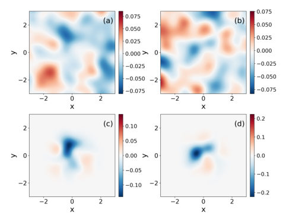
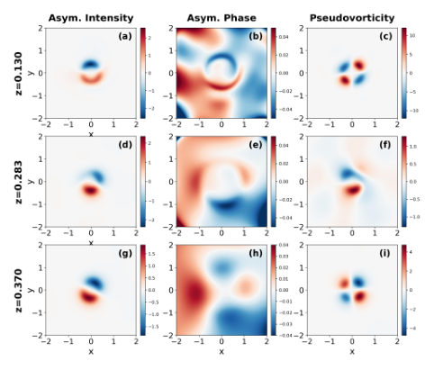
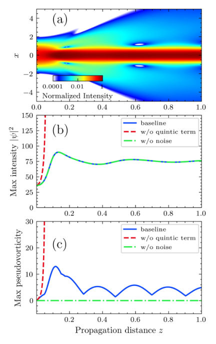
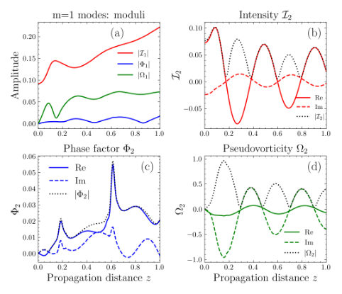
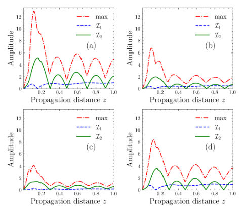
Summary. The research analyzes the generation of pseudovorticity—a measure of local rotational flow—in self-focusing beams subjected to thermal amplitude and phase noise. By using a cubic-quintic nonlinear model, the authors demonstrate that quintic saturation prevents collapse, trapping noise into persistent, oscillating multipoles. This suggests a novel mechanism for controlling optical torque through careful 'noise engineering'.
Why it may be interesting. This work bridges nonlinear wave physics with stochastic processes, showing how engineered noise can stabilize or control complex topological features like pseudovorticity in optical systems, relevant for advanced quantum optics applications.
Main problem. The study investigates how amplitude and phase noise affect pseudovorticity generation in self-focusing Gaussian beams.
Main result. Quintic saturation arrests collapse, allowing persistent, oscillating multipolar pseudovorticity patterns to form, suggesting noise can control local optical torque.
Method. Numerical simulations using the split-step Fourier method on a 2D grid are employed to solve the cubic-quintic nonlinear Schrödinger equation.
Model / system. The system models self-focusing beam dynamics governed by the (2+1)-dimensional cubic-quintic Nonlinear Schrödinger Equation. Noise is introduced via Gaussian white noise added to both amplitude and phase components of the field.
Key observables. Pseudovorticity ($\omega$), asymmetric intensity residue, angular modal coefficients ($m=1$ dipole, $m=2$ quadrupole) for intensity, phase, and pseudovorticity.
Important parameters / regimes. Noise correlation length ($\sigma$), nonlinearity saturation parameter ($\epsilon$), and propagation distance ($z$).
Assumptions / limitations. The analysis relies on the paraxial scalar approximation; the pure cubic case's late-time collapse behavior was limited by spatial resolution.
Figures summary. Figures compare intensity, pseudovorticity evolution for noisy vs. clean beams (Fig. 2); Fig. 3 shows spatial snapshots of asymmetric fields and $\omega$; Figs. 4-7 quantify the mode competition dynamics between dipole and quadrupole components under varying noise statistics.
Paper structure. The paper establishes the model, defines pseudovorticity, simulates the evolution under noise, analyzes the persistence and oscillation of multipoles using modal decomposition (dipole/quadrupole), and concludes by linking input noise statistics to controllable optical torque.
We investigate pseudovorticity generation in Gaussian beams undergoing self-focusing under amplitude and phase noise, using the cubic-quintic nonlinear Schrödinger equation. Pseudovorticity, defined as the curl of the optical momentum flux, characterizes local rotational flow in the absence of phase singularities. Our numerical simulations show that thermal amplitude and phase noise induce a multipolar pseudovorticity pattern. Unlike the pure cubic case, where noise asymmetries are radiated away during collapse, the quintic saturation arrests collapse and traps the noise in the resulting soliton. Hence, pseudovorticity multipoles persist, oscillating at the focusing-refocusing period. These results suggest a potential pathway for controlling local optical torque through noise engineering.
Authors: Kanha Ram Khator, Anupam Manna, Amlandeep Nayak, Pravat Nayek, Prasenjit Mal, Satyaprasad P Senanayak
Type: experiment · Category: other · PDF: https://arxiv.org/pdf/2608.05890v1
Analysis basis: full PDF text, analyzed in chunks
Topic relevance: non-equilibrium dynamics 2/5 · analog quantum simulation 1/5 · correlated / nonlocal dissipation 1/5 · driven-dissipative phase transition 1/5 · methods for driven-dissipative 1/5 · non-equilibrium universality 1/5
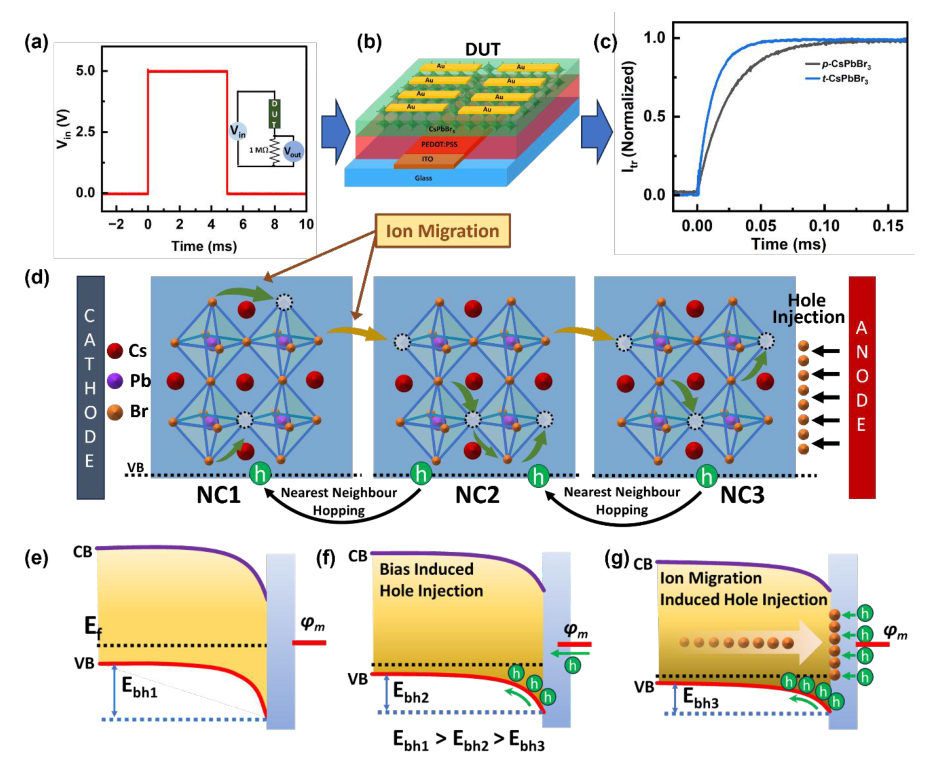
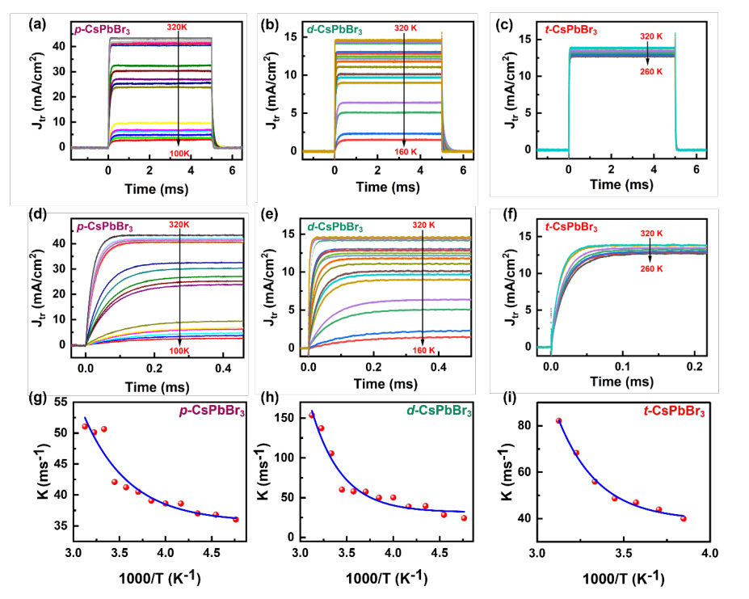
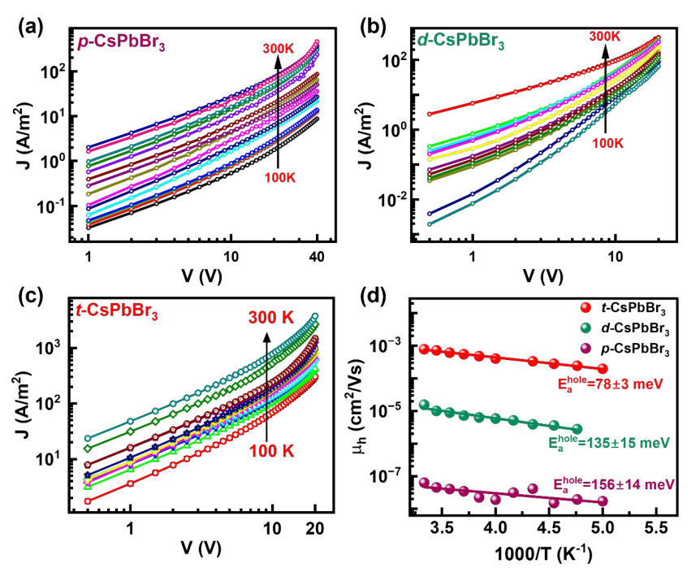
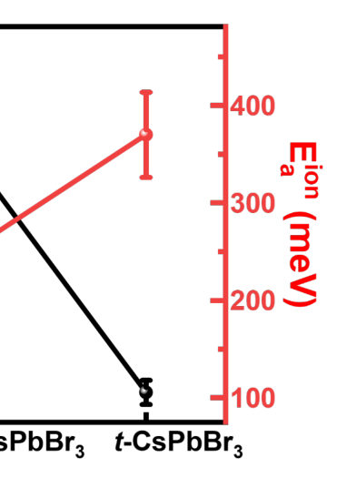
Summary. This work investigates how nanocrystal size and stoichiometry affect charge transport in $ ext{CsPbBr}_3$ perovskite semiconductors. By decoupling electronic and ionic contributions using transient measurements, the authors show that smaller NCs exhibit superior charge transport properties. This demonstrates that controlled synthesis can optimize device performance by managing both quantum confinement effects and defect-related ion migration.
Why it may be interesting. While focused on solid-state optoelectronics, the detailed separation of fast electronic hopping from slower, thermally activated ionic drift provides a model for understanding coupled charge carrier dynamics in complex interfaces, relevant to open quantum systems modeling.
Main problem. The study aims to comprehensively understand size-dependent charge transport by decoupling ionic and electronic transport dynamics in mixed-semiconductor nanocrystals.
Main result. Contrary to popular belief, the smallest $ ext{CsPbBr}_3$ NCs exhibit superior charge transport characteristics, evidenced by lower hole activation energy and higher ion migration barriers.
Method. The research utilized transient current measurements and space charge limited current (SCLC) analysis on thin films of varying sizes to probe coupled electronic and ionic dynamics.
Model / system. The physical system is all-inorganic cesium lead bromide ($ ext{CsPbBr}_3$) nanocrystals synthesized via controlled precursor chemistry, allowing systematic tuning of size and stoichiometry across different phases (p-, t-, d-).
Key observables. Time-of-flight mobility ($\mu_{ ext{TOF}}$), hole activation energy ($E_{a ext{hole}}$), ion migration activation energy ($E_{a ext{ion}}$), and characteristic time constants ($ au_c$).
Important parameters / regimes. NC size (5.6 nm to 11.3 nm), precursor chemistry, quantum confinement regime, and temperature dependence.
Assumptions / limitations. The analysis relies on fitting transport data to Arrhenius laws for temperature dependence and using SCLC formalism for high-field electronic measurements.
Figures summary. Figures illustrate the measurement setup for transient current pulses, show temperature-dependent transient currents across different NC phases, and present $J$-$V$ characteristics used to determine activation energies for both holes and ions.
Paper structure. The paper systematically investigates transport by first establishing the mixed-transport nature using transient measurements, then quantifying electronic mobility via SCLC, and finally characterizing ion dynamics through temperature-dependent analysis to correlate size/stoichiometry with optimal charge transport.
All-inorganic cesium lead bromide (CsPbBr3) nanocrystals (NCs) have established themselves as an emerging semiconductor for next-generation optoelectronic technologies due to their unique combination of properties, such as near unity photoluminescence quantum yields, narrow color pure emission, and exceptional defect tolerance. Although size-dependent optical signatures of these NCs are well reported, the complexity of mixed ionic-electronic transport remains largely unexplored. In this study, we provide a comprehensive analysis of size-dependent charge transport by decoupling ionic and electronic transport dynamics through carefully designed transient current and space charge limited current measurements. By employing NCs of different sizes ranging from 5.6 nm to 11.3 nm in thin films, we provide a comprehensive understanding of quantum confinement effects and related synthetic chemistry. Contrary to popular beliefs of quantum confinement and band gap broadening, our results demonstrate that the smallest NCs exhibit the most efficient transport characteristics, evidenced by the lowest activation energy (hole activation energy = 78 meV) for hole transport and the highest barrier for vacancy-mediated ion migration (ion activation energy = 370 meV). This work paves a way forward for perovskite-based efficient quantum devices, by demonstrating that moving into a strong quantum confinement regime, a superior charge transport can be facilitated, when supported by carefully tailored stoichiometry.
Authors: Saeed Samadi, Rafał Rechciński, Marta A. Chabowska, Ryszard Buczko
Type: theory · Category: other · PDF: https://arxiv.org/pdf/2608.05908v1
Analysis basis: full PDF text, analyzed in chunks
Topic relevance: analog quantum simulation 1/5 · driven-dissipative phase transition 1/5 · methods for driven-dissipative 1/5
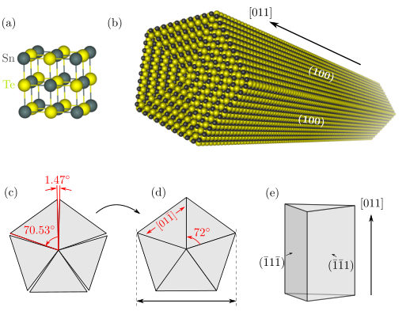
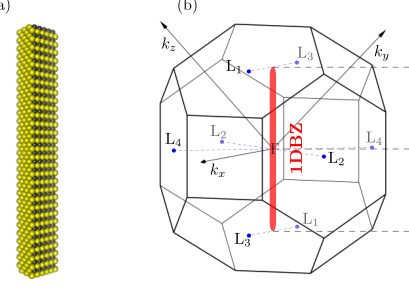
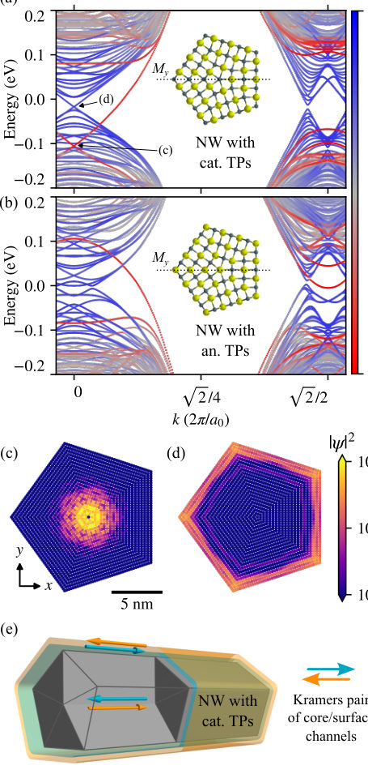
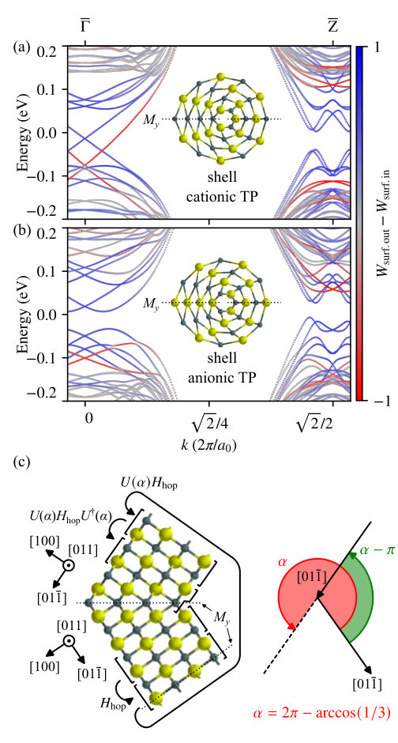
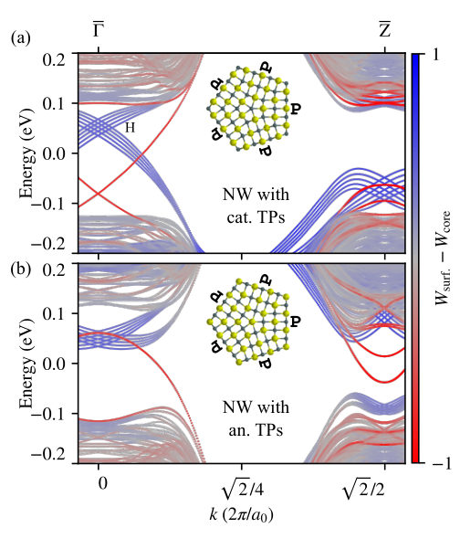
Summary. This work theoretically examines pentagonal topological crystalline insulator nanowires, predicting the existence of two spatially separated helical Dirac crossings—one localized in the core and one on the outer surface. These crossings appear only when the twin planes are cationic and the bulk band structure is inverted. The findings establish these specific nanowire geometries as a promising platform for realizing distinct boundary-bound topological states.
Why it may be interesting. While focused on solid-state topology, the concept of spatially separated boundary modes (core vs. surface) is analogous to engineered quantum systems where confinement dictates distinct physical behaviors at different spatial locations.
Main problem. The study investigates the electronic band topology of pentagonal topological crystalline insulator (TCI) nanowires, aiming to identify spatially separated helical Dirac crossings.
Main result. When the twin planes are cationic and bulk band inversion occurs, two distinct helical Dirac crossings—one at the core and one on the outer surface—are predicted. This establishes these structures as an accessible platform for realizing such separated topological channels.
Method. The research employs tight-binding (TB) calculations, supplemented by low-energy k·p theory, to model the electronic band structure of the nanowires.
Model / system. The system is a pentagonal IV–VI semiconductor nanowire (e.g., SnTe-class), characterized by five radial {111} twin planes meeting at the axis. The analysis compares results based on whether these twin planes are cationic or anionic.
Key observables. Electronic band structure, presence/absence of Dirac crossings, and wave function localization (core vs. surface).
Important parameters / regimes. Cationic vs. anionic composition of the twin planes; nanowire thickness ($\ge 50$ nm for predictions); bulk band inversion.
Assumptions / limitations. The calculations neglect axial strain from transverse deformation and use idealized core structures, which may not reflect true relaxation states.
Figures summary. Figures illustrate band structures showing the emergence of core/surface Dirac crossings (Fig. 3) and demonstrate that these crossings can arise even when considering only a single cationic twin plane shell (Fig. 4).
Paper structure. The paper progresses by first establishing the theoretical framework using TB models, then analyzing the spectral consequences based on the sublattice composition of the twin planes, and finally discussing structural stability via binding energy calculations.
We investigate the electronic band topology of recently fabricated pentagonal IV-VI semiconductor nanowires, which contain five radial $\{111\}$ twin planes meeting at the nanowire axis. Tight-binding calculations show that, when the bulk band structure is inverted and the twin planes in the nanowire are cationic, the spectrum contains two spatially separated helical Dirac crossings near $\overlineΓ$: one localized at the core and the other at the outer surface. When the twin planes are anionic, the corresponding spectra remain gapped. The crossings originate from the hybridization of five helical channels associated with the twin-plane edges, whose odd number leaves one Kramers pair near the nanowire axis and the other at the outer boundary. Realistic multiorbital calculations for $\mathrm{Pb}_{0.4}\mathrm{Sn}_{0.6}\mathrm{Te}$ predict well-developed core and surface modes at nanowire thicknesses of approximately 50~nm and above. These results establish pentagonal SnTe-class nanowires as an experimentally accessible realization of spatially separated helical channels bound to the axial defect and the outer boundary.
Authors: Huiyuan Zheng, Kaijie Yang, Ting Cao, Di Xiao
Type: theory · Category: strongly correlated electrons · PDF: https://arxiv.org/pdf/2608.05308v1
Analysis basis: full PDF text, analyzed in chunks
Topic relevance: analog quantum simulation 1/5 · correlated cavity matter 1/5 · driven-dissipative phase transition 1/5
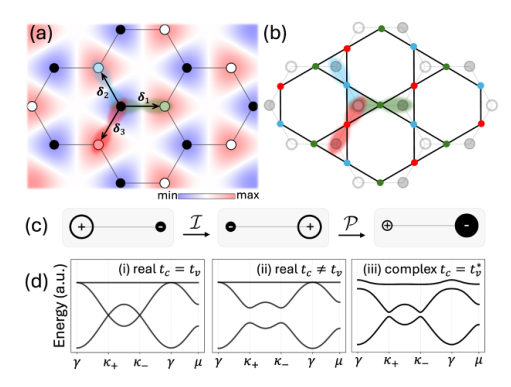
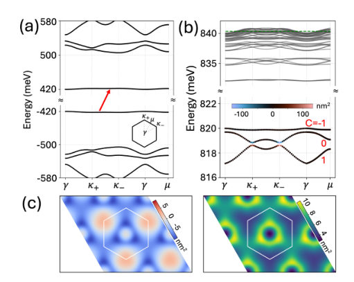
Summary. This work demonstrates that the internal structure of charge-transfer excitons can intrinsically generate topological band structures. By modeling these excitons on a Kagome lattice derived from off-site orbitals, the authors show that breaking time-reversal symmetry induces a robust topological flat band. This establishes a general theoretical pathway for engineering exotic correlated bosonic phases in condensed matter systems.
Why it may be interesting. The concept of emergent topology in composite bound states, like excitons, provides an alternative route to realizing topological phases compared to engineering topology directly into single-particle bands, which is highly relevant for designing novel quantum materials and light-matter interactions.
Main problem. To establish a microscopic origin for exciton topology arising from the internal structure of bound states, specifically using charge-transfer (CT) excitons where electron and hole are laterally separated.
Main result. The emergent multi-orbital manifold supports a topological exciton flat band upon time-reversal symmetry breaking, even when the constituent electron and hole bands are topologically trivial.
Method. Solving the Bethe-Salpeter equation (BSE) and analyzing the system's response to various symmetries ($ ext{T}$, $ ext{PI}$).
Model / system. The study uses CT excitons in a honeycomb lattice, which form an intrinsic manifold of symmetry-related off-site composite orbitals that mimic a Kagome lattice structure.
Key observables. Exciton band structure, topological nature (Chern numbers) of the resulting flat band, and exciton quantum geometry (Berry curvature).
Important parameters / regimes. Hopping amplitudes ($t_c, t_v$), potential strength ($\Delta$), mass asymmetry ($m_e^*/m_h^*$), and symmetry breaking parameters ($\eta$).
Assumptions / limitations. The analysis relies on the exciton structure arising from off-site orbitals rather than constituent bands; approximations include neglecting exchange interaction initially.
Figures summary. Figures illustrate schematic electron-hole distributions, the resulting Kagome lattice of CT excitons, and the calculated band dispersions under various symmetry breaking conditions.
Paper structure. The paper progresses from defining the physical problem (CT exciton topology) to deriving an effective Hamiltonian on a Kagome manifold. It then uses continuum models and BSE calculations to analyze how $ ext{T}$ and $ ext{PI}$ symmetry breaking dictates the topological properties of the resulting flat band.
Excitons possess internal structure absent from single-particle Bloch particles, allowing their band topology to emerge from the bound-state structure rather than being inherited from their constituents. This raises the question of how the internal structure of a bound state can provide a microscopic origin of exciton topology. Here we show that the real-space embedding of charge-transfer excitons can generate an intrinsic manifold of symmetry-related off-site composite orbitals whose coupling supports topological exciton bands. Lateral electron-hole separation embeds the localized exciton on the bond connecting its constituent sites rather than on either site. We demonstrate this mechanism in a honeycomb lattice, where three bond-centered charge-transfer exciton orbitals form a Kagome lattice. By solving the Bethe-Salpeter equation, we show that this emergent multi-orbital manifold supports a topological exciton flat band upon time-reversal symmetry breaking, even when the electron and hole bands are topologically trivial. The resulting band exhibits nearly uniformly distributed quantum geometry, favorable for interaction-driven bosonic states. Our results establish a general route toward topological bands of localized composite bound states and unconventional strongly correlated bosonic phases.
Authors: Rahul Soni, Nathan S. Nichols, Sutirtha Paul, Garfield Warren, Paul Sokol, Adrian Del Maestro
Type: both · Category: statistical mechanics · PDF: https://arxiv.org/pdf/2608.05603v1
Analysis basis: full PDF text, analyzed in chunks
Topic relevance: methods for driven-dissipative 1/5
Summary. This work demonstrates that atomic preplating of MCM-41 nanopores with argon can systematically engineer the pore's internal surface chemistry. By combining extensive simulation techniques (GCMC, MD) with experimental data analysis, the authors derive a smooth, quantifiable confinement potential for helium atoms. This provides crucial microscopic input for theoretical studies of quantum fluids in porous media.
Why it may be interesting. It provides a rigorous, atomistically derived microscopic potential for quantum fluids in confined geometries, directly validating continuum models used in advanced quantum simulations.
Main problem. The study aims to understand how modifying mesopore interfaces via preplating affects the microscopic confinement potential experienced by adsorbed quantum fluids like helium.
Main result. Preplating MCM-41 with argon modifies the pore interface, resulting in a smooth radial confinement potential that can be accurately described by continuum models for confined helium.
Method. The research combines grand-canonical Monte Carlo simulations of argon adsorption, low-temperature molecular dynamics, and helium test-particle insertion calculations.
Model / system. The physical system is MCM-41 mesoporous silica nanopores. Interactions are modeled using Lennard-Jones potentials, and the confinement potential for He is derived by simulating Ar adsorption first.
Key observables. Helium adsorption minimum location (annular region), radial confinement potential $U(r)$, argon adsorption isotherms, and structure factors $S(q)$.
Important parameters / regimes. Simulation temperatures ($90 ext{ K}$, $4 ext{ K}$), chemical potentials ($\mu$), pore radius ($ ext{R}_{ ext{pore}} = 20 \mathring{ ext{A}}$).
Assumptions / limitations. The primary assumption is that the argon preplating screens enough roughness to allow the confinement potential to be approximated by a smooth, continuum cylindrical model.
Figures summary. Figures compare simulated and experimental adsorption isotherms for argon; other figures detail structural profiles (density/pair-correlation) and derivatives used to determine monolayer completion points.
Paper structure. The paper follows a progression from characterizing the Ar adsorption process (GCMC, structure factor), determining interface modification details (occupancy curves, $\mu_{ ext{mono}}$), and finally applying these results to calculate and validate the He confinement potential using test-particle insertion and Gaussian Process regression.
Atomic-scale modification of mesopore interfaces provides a route to tune the confinement experienced by adsorbed fluids, but how a specific interface preparation translates into the resulting microscopic confinement potential remains unclear. Here, we show that preplating MCM-41 with an argon monolayer modifies the effective pore interface by occupying strongly attractive regions of the heterogeneous silica surface and screening its atomic-scale corrugation. Grand-canonical Monte Carlo simulations of argon adsorption, low-temperature molecular dynamics, and helium test-particle insertion are combined with adsorption isotherms and neutron-scattering measurements to characterize the preplated pore at the atomic scale. Helium test-particle insertion calculations show that the modified interface shifts the helium adsorption minimum to an annular region inside the pore and produces a confinement landscape dominated by a smooth radial component. The resulting radial confinement potential can be described by a continuum cylindrical model, providing microscopic support for the effective potential used in earlier quantum Monte Carlo studies. Residual corrugation persists over multiple spatial scales and is accurately captured by a Gaussian process surrogate. These results demonstrate how atomic preplating can tailor nanopore confinement and provide an experimentally constrained microscopic potential for predictive studies of confined quantum fluids.